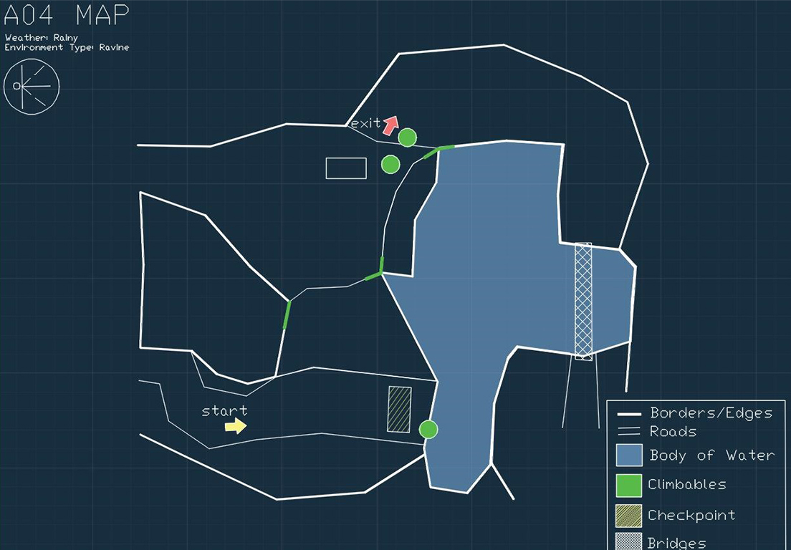
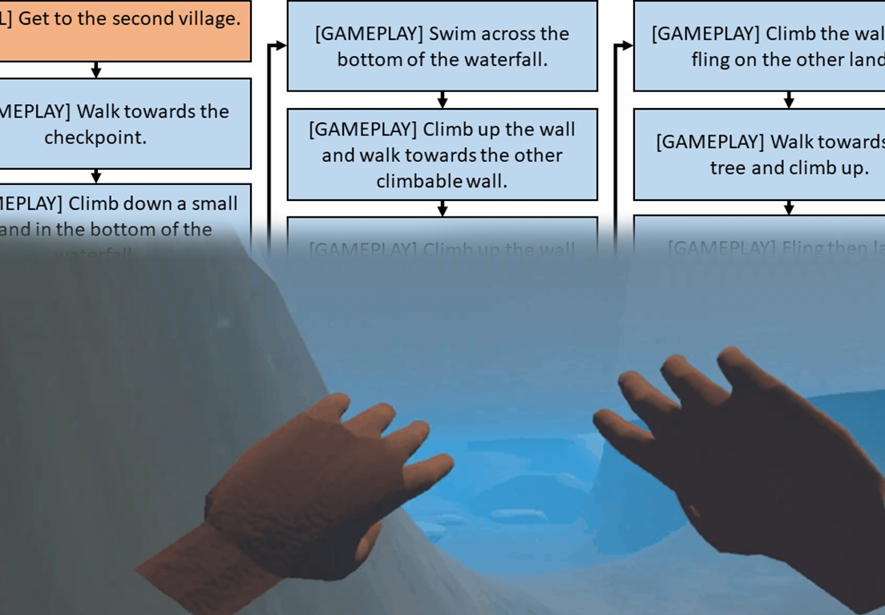
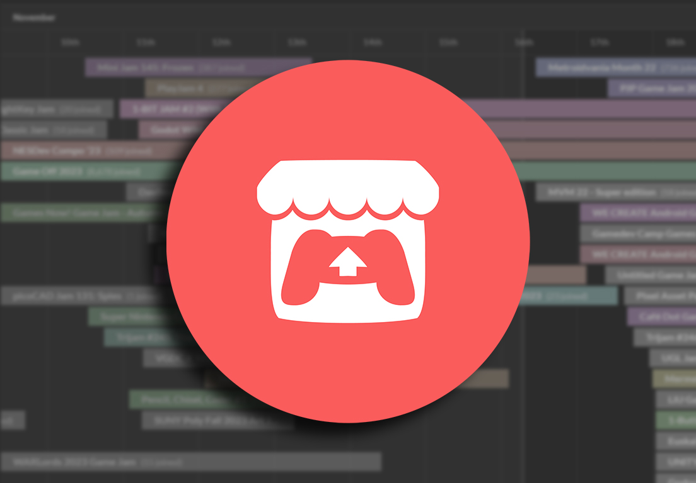

While making current iteration of The Yellow Boat Reimagined, I made a few map proposals. Even though not used, these were ultimately repurposed as a reference point for the experience and progression we wanted to have in the original The Yellow Boat.

This is a breakdown of the goal gameplay of The Yellow Boat Reimagined. Though some of it are not the exact match as the one in the current game, rest assured, that we are finding ways to push through with the project and fulfill our goal gameplay.

Extra Credits hosted the Extra Credits Holiday 2018 Game Jam in itch.io last December 14-18, 2018. It had the theme of PRESENT which was just timely for the holiday seasons to kick in.